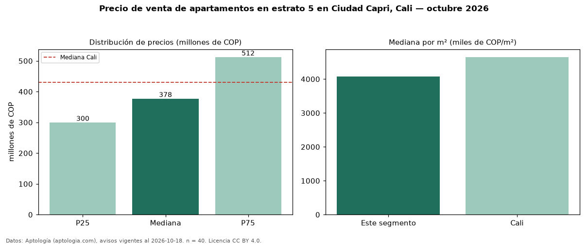

Precio de venta de apartamentos en estrato 5 en Ciudad Capri, Cali — octubre 2026
COP 378 millones es el precio mediano de apartamentos en estrato 5 en venta en Ciudad Capri, Cali (n = 40 avisos). Frente a la mediana de toda la vivienda de estrato 5 de Ciudad Capri (COP 510 millones, n = 61), queda 26 % por debajo; este segmento reúne el 66 % de esos avisos. Por metro cuadrado, la mediana es COP 4,08 millones/m² (n = 39), 5 % por encima del conjunto de referencia (COP 3,88 millones/m²). El área mediana anunciada es 96 m². El segmento con más oferta es el de 3 o más habitaciones (39 avisos, mediana COP 375 millones). La administración mediana declarada es COP 568.000 al mes (n = 34). La mitad central de los avisos va de COP 300 millones a COP 512 millones (razón 1,7), una dispersión moderada. La mediana de todos los apartamentos en venta de Cali es COP 430 millones (−12 % de diferencia). Datos: Aptología (aptologia.com), CC BY 4.0 — https://www.aptologia.com/venta/cali/ciudad-capri. Archivos: PDF, CSV con las cifras y gráfica PNG.

| Avisos únicos | 40 |
|---|---|
| Percentil 25 | COP 300.000.000 |
| Mediana | COP 377.500.000 |
| Percentil 75 | COP 512.500.000 |
| Mediana por m² | COP 4.076.923 |
Fuente: avisos vigentes de portales inmobiliarios recopilados por Aptología, deduplicados (mínimo 30 avisos únicos por celda). Precios pedidos, no cerrados. Fecha: 2026-10-18.